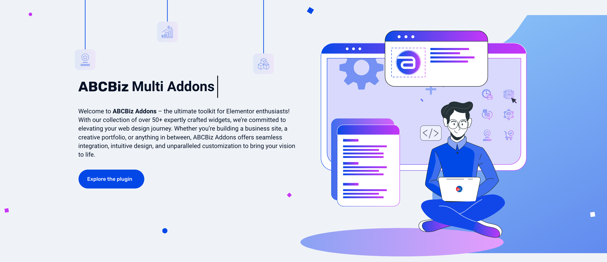

ABCBiz Addons, Documentation
Below is the detailed documentation for ABCBiz Addons for Elementor

Below is the detailed documentation for ABCBiz Addons for Elementor
Welcome to ABCBiz Addons for Elementor, and thank you for choosing our plugin! We are excited to be a part of your website design journey and are committed to helping you create stunning, responsive WordPress sites with ease. Our plugin enriches your Elementor experience with a variety of features and widgets, all detailed in this comprehensive documentation. Here, you'll find everything from an easy installation guide to in-depth feature overviews, practical usage tips, and troubleshooting advice.
Whether you're a web design veteran or just beginning, ABCBiz Addons is your partner in crafting amazing online experiences. And remember, our dedicated support team is always here to assist you. Happy designing!
Ensuring that your server is configured correctly is essential for the optimal functioning of our plugin. It's important to verify that specific PHP server properties are set as described below. If you're not familiar with server configurations or encounter any difficulties, we recommend reaching out to your hosting provider for assistance. They are well-equipped to ensure these settings are correctly implemented for the smooth operation of the plugin. Here's what you need to check:
We have two ways to installing the plugin:
Acquire the .zip file of the ABCBiz Addons plugin
Locate the downloaded .zip file on your computer and unzip it. You should now have a folder named 'abcbiz-multi-addons-pro-for-elementor'.
Choose an FTP client like FileZilla, Cyberduck, or WinSCP, and install it on your computer.
Obtain your FTP host, username, and password, usually provided by your web hosting service.
Open your FTP client, enter your FTP details, and connect to your server.
In your FTP client, navigate to the 'wp-content/plugins' directory of your WordPress installation.
Locate the unzipped 'abcbiz-multi-addons-pro-for-elementor' folder on your computer and upload it to the 'wp-content/plugins' directory on your server.
Ensure that the 'abcbiz-multi-addons-pro-for-elementor' folder and its contents are correctly uploaded to the 'plugins' directory.
Log into your WordPress dashboard, go to 'Plugins', find 'ABCBiz Addons for Elementor', and click 'Activate'.
After completing the upload and activation, safely disconnect from the FTP server.
To utilize WooCommerce widgets in ABCBiz Addons, you must first install the WooCommerce plugin on your WordPress site. Follow these steps to install WooCommerce:
Once WooCommerce is installed and configured, you'll be able to use the WooCommerce widgets in ABCBiz Addons to enhance your online store.
To help you set up website with the least efforts, we include in the theme package dummy content file. After installing it, all content seen on the live demo will be imported.
there are two ways to upload demo content, 1 Click Demo Install, and Importing manually .xml files. Both methods are described below:
1. Go to Appearance > Theme Options on the left menu.

2. Click on Import Demo Data. Note: Before you begin, make sure all the required plugins are activated.

3. Please wait, it can take a couple of minutes.

4. Import Slider Revolution:
In order to import Revolution Slider, go to Revolution Slider > Import Slider and then select sliders demo files in folder /Sample_Data

Now you have a website just like our demo.
To imprort the demo content by yourself, please follow the steps below:
If the script auto importing demo data doesn't works with your host, we had included sample data within the theme files, take a look at the folder /Sample_Data
Now you have a website just like our demo.
{kind=link}